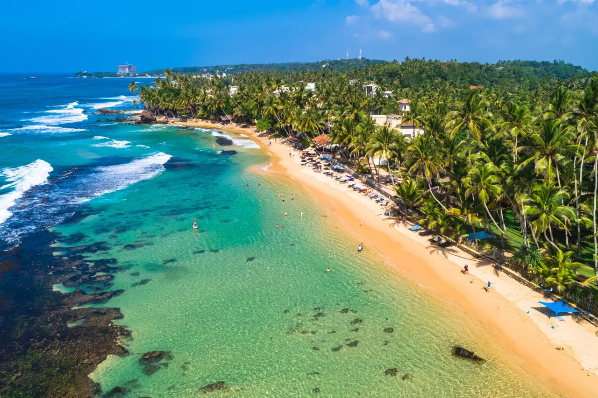
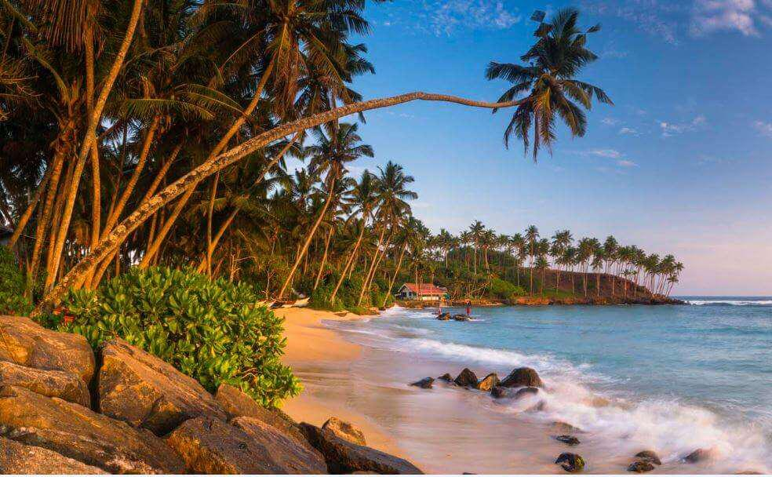

Beach Relaxation
Duration: 5 Days
Relax on Sri Lanka’s pristine beaches, enjoy tropical cocktails, and experience coastal beauty in Unawatuna, Mirissa, and Trincomalee.
Itinerary
- Day 1: Arrive in Unawatuna, settle into your beachfront hotel, sunset stroll on the beach.
- Day 2: Snorkeling and swimming at Unawatuna Bay, visit Japanese Peace Pagoda.
- Day 3: Head to Mirissa, whale watching tour in the morning, relax on Mirissa Beach in the afternoon.
- Day 4: Travel to Trincomalee, explore Nilaveli Beach and Pigeon Island National Park.
- Day 5: Leisure morning, beachside brunch, departure or continue your Sri Lanka journey.
Gallery


Travel Tips
- Carry sunscreen and stay hydrated during beach activities.
- Respect local customs and marine life; avoid littering.
- Best time to visit is from November to April for calm seas.
- Wear comfortable footwear for exploring rocky coastal areas.
Book This Package
Back to Home